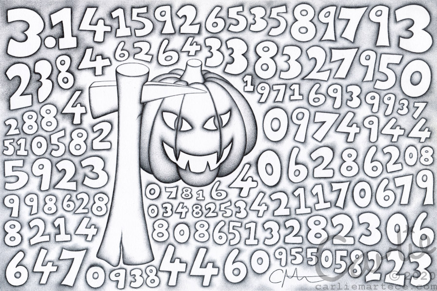
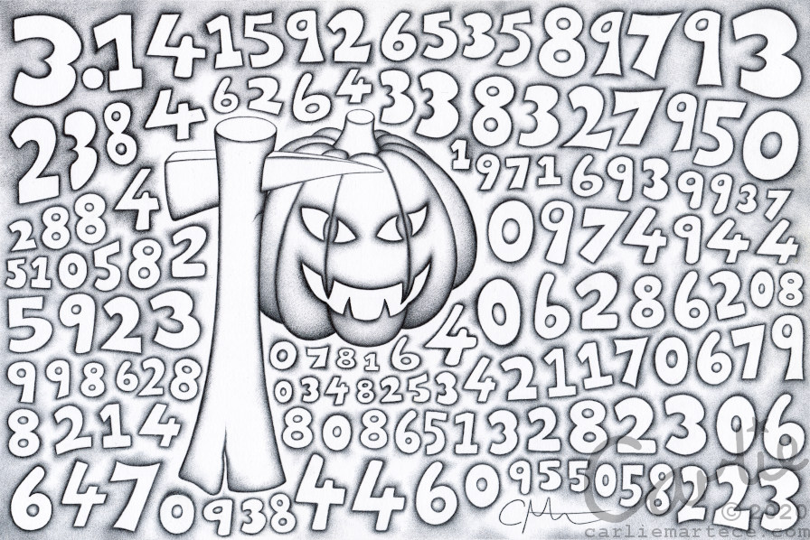

Ey Up Pi Fans!
Pick your pi...
We can't show all the pi because it would take forever, but we can show some of the pi.
Pumpkin Pi
Here is some pi-themed biro art by Carlie Martece.
We can't show all the pi because it would take forever, but we can show some of the pi.
Here is some pi-themed biro art by Carlie Martece.
